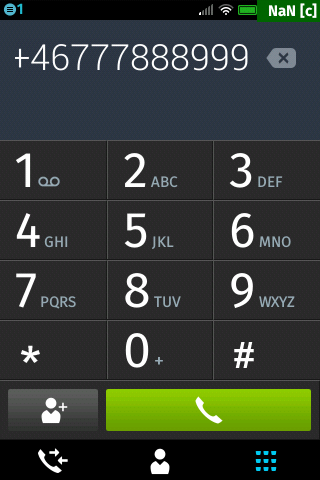

var installapp = navigator.mozApps.install(manifestURL);installapp.onsuccess = function(data) { // App is installed};installapp.onerror = function() { // App wasn't installed, info is in // installapp.error.name};
addNotification.onclick = function () { var notification = navigator.mozNotification.createNotification( "See this", "This is a notification" ); notification.show();};
Need permissions in webapp.manifest.
"permissions": { "desktop-notification": {} },
Web Payments and Verification
//paymentToken is a signed JSON Web Token (JWT) with payment details var buyme = navigator.mozPay(paymentToken); buyme.onsuccess = function(event){ //Dont spend it all in one place }
Make sure to implement receipt validation in your code, which can be tested in the simulator:
Validating a Receipt.
Page Visibility API
document.addEventListener("visibilitychange", function () {if (document.hidden) { console.log("App is hidden");} else { console.log("App has focus");} });
var contact = new mozContact();contact.init({name: "William"});var request = navigator.mozContacts.save(contact);request.onsuccess = function() { // contact generated};request.onerror = function() { // contact generation failed};
Permission must be set in manifest.webapp
"contacts":{ "access": "readwrite" },
Device Storage API
var sdcard = navigator.getDeviceStorage("sdcard");var file = new Blob([vcard], {type: "text/plain"});var request = sdcard.addNamed(file, "test/my-file.vcf");request.onsuccess = function () {..}request.onerror = function () {..}
Permission must be set in manifest.webapp
"device-storage:sdcard":{ "access": "readwrite" },"device-storage:pictures":{ "access": "readwrite" },
Cross Domain XML Httprequest
var xhr = new XMLHttpRequest({mozSystem: true});xhr.open("GET", "http://urltoreadme/README.md", true);xhr.onreadystatechange = function () { if (xhr.status === 200 && xhr.readyState === 4) { }}xhr.onerror = function () {....};xhr.send();
Permission must be set in manifest.webapp
"systemXHR": {},
navigator.mozSetMessageHandler('activity',function(activityRequest) { var option = activityRequest.source; if (activityRequest.source.name === "pick") { // Do something to handle the activity if (picture) { activityRequest.postResult(picture); } else { activityRequest.postError("Unable to provide a picture"); } }});
Web Activity Sender 1(2)
var activity = new MozActivity({ name: "pick", // Provide the data required by the //filter of the activity data: { type: "image/jpeg" }});
Web Activity Sender 2(2)
activity.onsuccess = function () { var img = document.createElement("img"); if (this.result.blob.type.indexOf("image") != -1) { img.src = window.URL.createObjectURL(this.result.blob); }};activity.onerror = function () { // error};
Sending a number to the phone

var call = new MozActivity({ name: "dial", data: { number: "+46777888999" }});


Social and Entertainment Apps